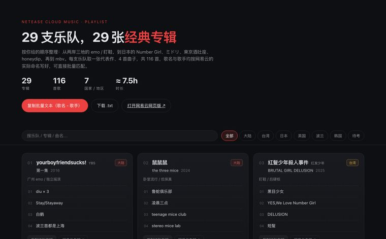
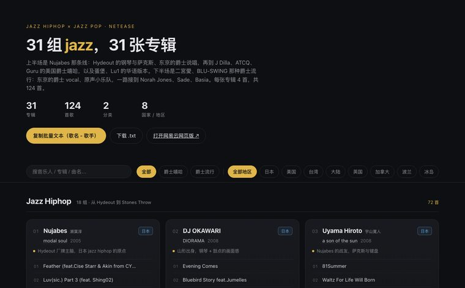
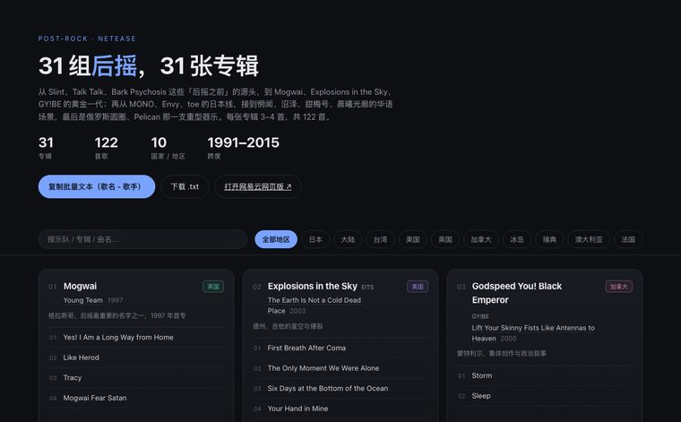
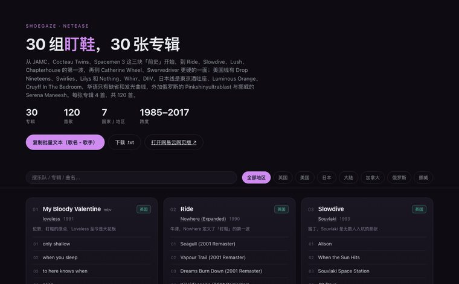
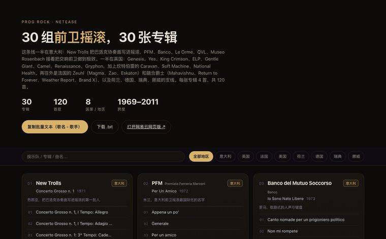

Netease Cloud Music · Playlists
按「一支乐队 / 一位音乐人 → 一张代表作 → 3–4 首」整理，每份都配了批量导入文本、CSV 和可搜索的页面。挑一份进去，或者五份都听完。

29 张专辑 · 116 首
两岸三地 + 日本的 emo 与盯鞋：透明杂志、午夜乒乓、返校日、Chinese Football、Number Girl、ミドリ、東京酒吐座、honeydip、mbv

31 张专辑 · 124 首
上半场 Nujabes 那条线到 J Dilla、ATCQ、蛋堡；下半场二宮愛、BLU-SWING 到 Norah Jones、Sade

31 张专辑 · 122 首
Slint、Talk Talk 的前史，Mogwai、EITS、GY!BE 的黄金一代，再到 MONO、惘闻、甜梅号与重型器乐

30 张专辑 · 120 首
mbv、Ride、Slowdive、Lush 的第一波，加 Drop Nineteens、東京酒吐座、缺省、发光曲线

30 张专辑 · 120 首
意大利交响前卫（New Trolls、PFM、Banco、QVL）、英国（Genesis、Yes、KC、ELP）、法国 Zeuhl（Magma、Zao）与融合爵士（Mahavishnu、Weather Report）